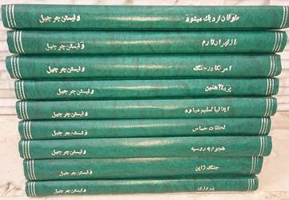

کتاب ها

انتشارات:
Mariner Books
سال نشر:
۱۹۴۸
کل تعداد خوانندگان:
۲,۰۱۴
تعداد نظرات:
۵۷
تعداد امتیازها:
۵۷۵
میانگین امتیازها: ۴.۴
The quintessential account of the Second World War as seen by Winston Churchill, its greatest leader
As Prime Minister of Great Britain from 1940 to 1945, Winston Churchill was not only the most powerful player in World War II, but also the free world's most eloquent voice of defiance in the face of Nazi tyranny. Churchill's epic accounts of those times, remarkable for their grand sweep and incisive firsthand observations, are distilled here in a single essential volume. Memoirs of the Second World War is a vital and illuminating work that retains the drama, eyewitness details, and magisterial prose of his classic six-volume history and offers an invaluable view of pivotal events of the twentieth century.
- ۵۳۱۷
- ۴۱۹۱
- ۳۵۳
- ۲۷
- ۱۷

خاطرات جنگ جهانی دوم
انتشارات:
نيل
سال نشر:
۱۹۷۰
تعداد نظرات:
۳
تعداد امتیاز:
۵
مترجم: